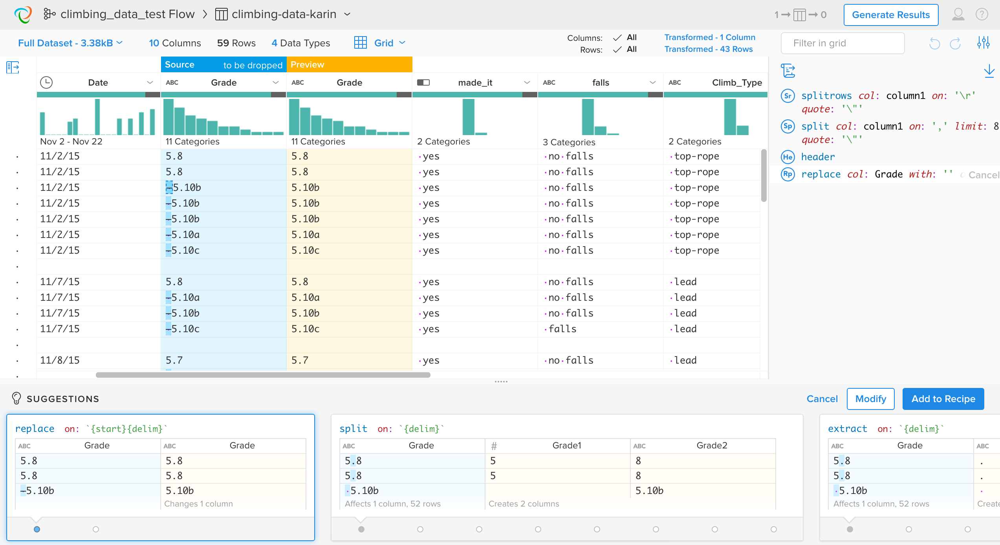
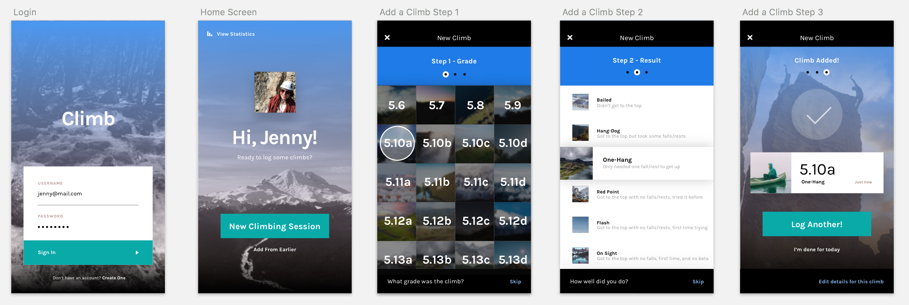

I spend a fair amount of my free time at the climbing gym and in the mountains. At some point my climbing partner and I thought it would be cool to know exactly how much and how hard we were actually climbing. This is a personal, still in progress, project that’s about tracking and visualizing data around rock climbing in order to see improvements over time.
At some point, my climbing partner and I started being curious about how well we were actually doing at the gym. How many climbs did we do per session? Did we climb harder grades now than we did last year? How much top-roping vs lead climbing were we doing?
For fun we started thinking about an app that made it easy to track each climb while at the gym, and that would also show you the over time trends that we were curious about.
For a proof of concept, I came up with a data schema that would fit the kinds of questions we were asking, and I started manually tracking my climbs just by writing them down on my phone every time we went to the gym.
After collecting over 15 months worth of data, I spent some time using Trifacta Wrangler to clean up the messy, manually entered entries by doing things like fixing typos, removing spaces, and adding properly formatted dates.
 Wrangling data using Trifacta WranglerEnding up with a nice clean data file with over 450 records of individual climbs, I started looking into easy ways of visualizing this data. After playing a bit with plot.ly, Google Data Studio, and Excel, I eventually landed on Tableau as a convenient and quick way of putting together a nice looking, filterable, web accessible dashboard of my data.

It was really fun, and cool, to see how my climbing has changed over the year. A couple of tidbits I figured out while building this dashboard:
I really enjoyed the process of tracking, cleaning and visualizing this data, as it had me discover a few new tools I hadn’t used before. Still, it was a pretty manual process, so I’m still excited about the idea of having an app to make the data entry easier, and get the visualizations to always stay up to date.
For the app itself, I started out by making a simple wireframe prototype that showed how to track a climb. I wanted as few taps as possible since when you’re climbing your hands tend to be all dirty and chalky, so in later versions I’ve removed the “next” button, and made the selections automatically advance to the next step.
At this point, I’m still experimenting with the higher fidelity design, but here is one example of some work in progress.
 One idea for the visual design of the appAs a designer you rarely get the luxury of designing something where you yourself is the main audience, which is why this project has been a ton of fun. But, if we ever were to make this an actual app, for a broader audience, we’d have to get more rigorous around checking demand and doing testing with many different types of climbers. For now, it’s mostly been a fun exercise in visual design, and a bit of data geekery.